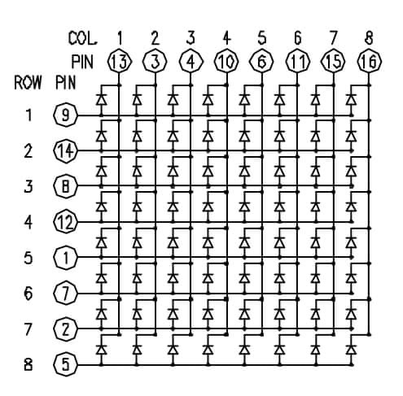
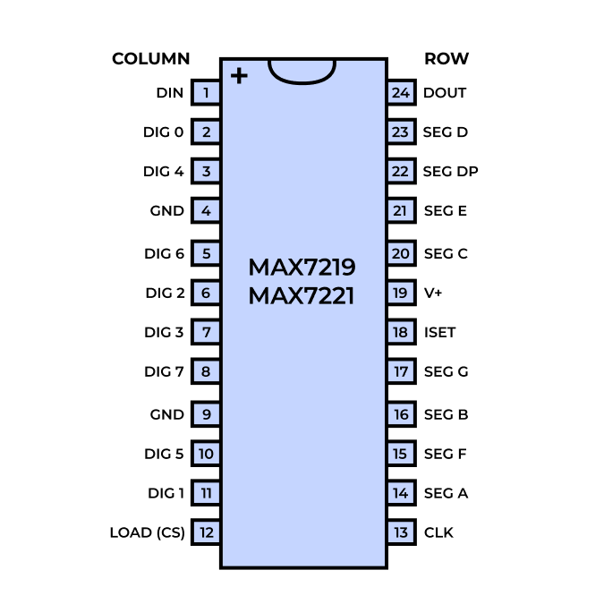
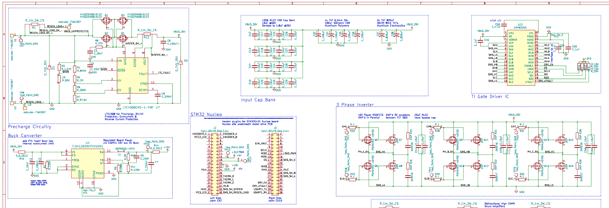
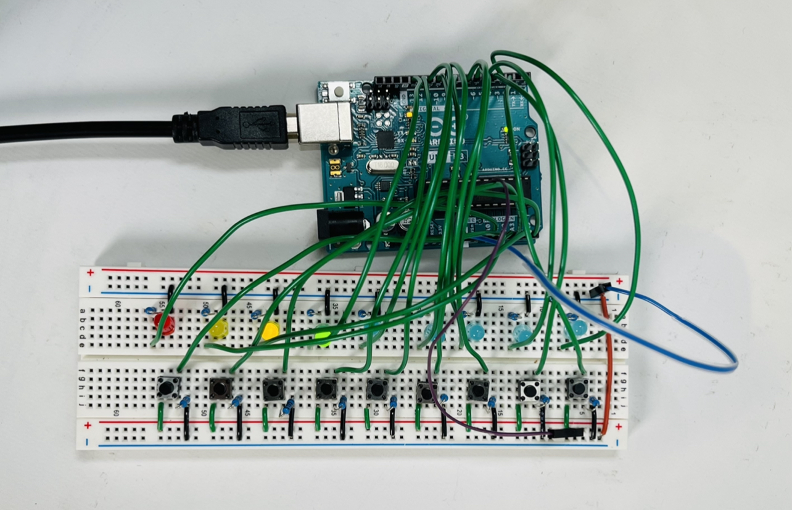

Disco Cats
Electrical
Our electrical system utilizes an Arduino Mega, an Arduino Uno, 9 DC stepper motors, 9 stepper motor drivers, a 12V 5A AC→DC power supply, 64 LEDs, a MAX7219 multiplexing LED driver, and an input panel with push-down buttons and status LEDs.
The LED Matrix + MA7219 Chip
64 LEDs are hooked up in a parallel grid layout with the common anodes being attached in rows, and the cathodes being attached in columns.
The Arduino Mega interfaces with a MAX7219 multiplexing LED driver to control the LED matrix. The MAX7219 is an integrated circuit that normally drives a 7-segment display, but can be configured to drive an 8x8 LED matrix. We chose this chip because it only needed to use 3-pins (CLK, LOAD, and DATA), as the dancing cat motor controllers occupied most of the Arduino Mega’s pins.
Parallel grid layout for 64 LEDs
MAX7219 pin configuration. DIG 0-7 map to columns, SEG DP-G map to rows
The MAX7219 chip uses a SPI protocol to activate one LED column at a time. On each CLK pulse, the chip shifts in 3 bits of column address selection and 8 bits of data. By multiplexing, it connects the chosen column to GND and pulls all other columns to 5V. The 8 bits of data get moved across the chip by shift registers. When the LOAD signal pulses, all the data in shift registers are transferred to latch registers. If the latch register is HIGH, this gives power to an LED row. By rapidly iterating between all the columns, persistence of vision makes it appear like all the LED columns and rows are powered at once!
On the chip, a 10kΩ current-limiting resistor is hooked up to the chip’s power source. This controls the current that powers the LEDs. The chip is powered by the 5V signal from the Arduino Mega. To ensure that the power signal is free of noise, a 100pF bypass capacitor has been placed near the chip’s power source.
DC Stepper Motors + ULN2003 Driver Boards
To express full 360-degree motion in our dancing cat design, we chose to use stepper motors. More specifically, we chose 28-BYJ48 stepper motors and ULN2003 driver boards because they are the most common stepper drivers and thus have ready-made compatible arduino libraries. In total, we use nine 28-BYJ48 stepper motors with ULN2003 driver boards. Each stepper motor requires 4 I/O pins, using 36 pins in total. The Arduino Mega is a large Arduino board with enough I/O pins to control both the 9 motor drivers and the LED Matrix.
The circuit diagram below shows how each stepper motor is connected to specific I/O pins and the power supply.

At first, we were supplying 5V to the motors from the Arduino, but when we connected more than 3 motors at the same time the motors started to move slowly or wiggling back and forth instead of moving smoothly in one direction.
Through testing and reading the spec sheet, we determined that the problem was caused by insufficient power. Since the ULN2003 driver boards have a maximum voltage of 12V, and the stepper motors work best with ~260mA of current, to drive all 9 motors simultaneously, we use a 12V 5A AC-DC power supply. We also experimented with different motor speeds and found the optimal speed was 600 steps per second.
User Input Panel
An Arduino UNO is hooked up to an input panel with 9 push buttons with 9 corresponding status LEDs. Pull down resistors are used to minimize noise and limit current through the LEDs.
About Us
- Mechanical: Efe Gulcu & Cory Knox (also PM)
- Electrical: Max Stopyra
- Software: Gati Aher & Mari Kang


-
Olin College of Engineering
1000 Olin Way, Needham, MA
Principles of Integrated Engineering, Fall 2021
- disco_cats
- Website Powered by HTML5: Solid State